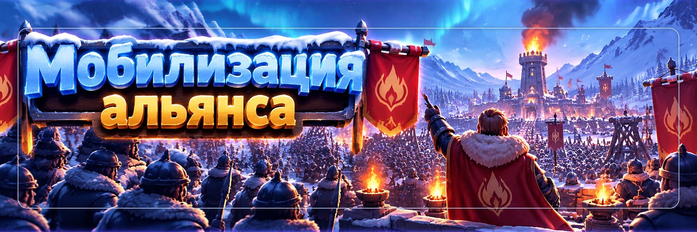

Мобилизация альянса
Автор: SOVA58
Главное здесь не брать всё подряд, а выбирать самые выгодные задания и не сливать редкие ресурсы впустую.
🎯 Главный принцип
Каждое принятое задание расходует попытку. Даже если потом отказаться от него, попытка уже потрачена.
Важно о попытках: в опубликованных правилах 2026 года предусмотрено 9 базовых попыток на всё событие, а не на каждый день. Можно получать дополнительные попытки. Сверяйте доступный остаток со счётчиком в своей RU-версии.
🟠 Эксклюзивные задания
У каждого игрока есть 2 личных слота эксклюзивных заданий. Каждый слот можно выполнить до двух раз за день. Эти четыре задания не дают автоматически четыре новые попытки: каждое принятое задание расходует общий запас попыток.
Только одно эксклюзивное задание в день получает бонус 200%. Остальные идут с повышенной ценностью, но слабое задание под 200% лучше не тратить.
🔥 Куда лучше отдавать 200%
🔄 Обновление задания
Если эксклюзивное задание не подходит, не принимайте его. Сначала обновите и дождитесь более выгодного варианта.
📋 Общая доска
Задания общей доски доступны участникам альянса. R4/R5 стоит регулярно убирать слабые варианты и оставлять задания, которые реально будут выполнены.
- ✅ сбор ресурсов;
- ✅ звери и Полярный ужас;
- ✅ обучение войск;
- ✅ ускорения под текущие события;
- ❌ долгие и дорогие задания с плохой отдачей.
💰 Простые задания
Если не хотите трогать редкие запасы, спокойно берите задания на зверей, Полярный ужас, сбор ресурсов и обучение войск.
🧙 Эксперты и 🔥 кристаллы
Книги знаний, Печати экспертов и огненные кристаллы лучше не расходовать просто так, если прокачка может подождать.
Накопили → нашли хорошее задание → потратили под бонус.
⏱️ Ускорения
Не берите первое попавшееся задание на ускорения. Смотрите, что именно оно требует: строительство, исследования, обучение или любые ускорения.
Если всё равно обучаете войска, выгоднее взять именно соответствующее задание.
🪖 Войска
Повышение старых войск до более высокого уровня тоже полезно, если оно закрывает условие задания. Это хороший способ одновременно привести армию в порядок и получить очки.
💎 Алмазы
Задания на трату алмазов могут быть выгодными, но только если вы и так собирались что-то покупать.
🧠 Совмещаем события
Самая выгодная Мобилизация — та, где один расход даёт награды сразу в нескольких местах.
- 🔥 кристаллы → Мобилизация + событие прокачки;
- 🪖 обучение → Мобилизация + подготовка;
- 🧙 эксперты → Мобилизация + событие экспертов;
- 💎 алмазы → Мобилизация + колесо.
💬 Опыт игроков
- ✅ Не брать слабое задание просто потому, что свободна попытка.
- ✅ 200% сохранять под самое дорогое задание дня.
- ✅ Эксклюзивные задания прокручивать до подходящего.
- ✅ Не принимать задание, пока не проверили инвентарь.
- ✅ Крупные улучшения совмещать с другими событиями.
- ✅ СВС важнее красивого счёта Мобилизации.
👑 Для R4 / R5
- следить за общей доской;
- обновлять слабые задания;
- оставлять хорошие миссии тем, кто их выполнит;
- напоминать про эксклюзивные задания;
- не требовать бессмысленных трат;
- следить за общим рейтингом и лигой.
🚫 Частые ошибки
- ❌ взять задание и только потом читать условия;
- ❌ отказаться от уже принятого задания;
- ❌ потратить 200% на дешёвую миссию;
- ❌ сливать книги, кристаллы и питомцев без задания;
- ❌ тратить алмазы только ради очков;
- ❌ ждать последнего дня и пытаться закрыть всё разом.
✅ Короткая памятка
🟠 Каждый день ищем хорошее эксклюзивное задание.
🔥 Лучшее задание дня → 200%.
🔄 Не подходит → обновляем до принятия.
📦 Копим экспертов, кристаллы, питомцев и ускорения.
🎯 Совмещаем расходы с другими событиями.